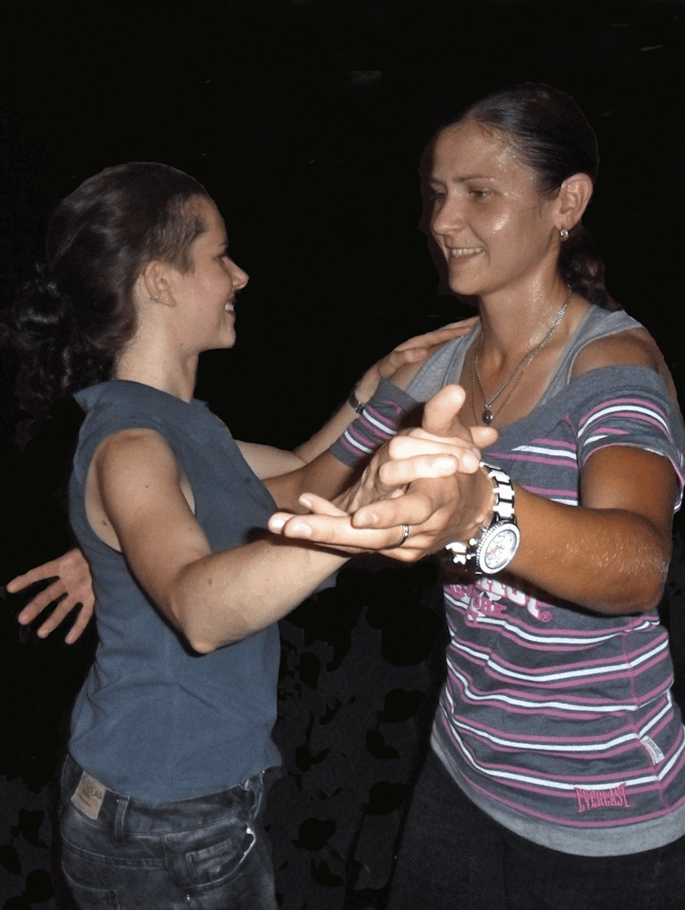

VENUE
The London Welsh Centre
157-163 Gray's Inn Road, London WC1X 8UE
The venue is in the middle of Grays Inn Road and a short walking distance from Kings Cross, Chancery Lane and Russell Square, and buses 17, 45 and 46 pass the door. Parking: Cars may be parked in the road outside the Centre, which is just north of the junction of Grays Inn Road with Guilford Street, from 6.30pm.
TIMES/PRICES
Beginners Class: from 7.00pm to 8.00pm every Wednesday
Intermediate Class: from 8.00pm to 9.00pm every Wednesday
1 hour class: £6 / 2 hour class: £9
CLASSES
We teach a four beat Colombian style salsa and you will learn essential Salsa steps within a fun, sociable and safe environment. There are no boundaries and you choose whether you want to lead or follow. In all classes we change partners constantly which helps to challenge you to push yourself further. The classes are ongoing, you can join them at any given point and you don't need to bring a partner. No special footwear or clothes are required though you should wear what you feel most comfortable in.
BEGINNERS CLASS
The beginners class is designed to teach the very basic rhythm with the appropriate footsteps. Attention will also be paid to the initial development of individual style. Students are encouraged to move on to the Intermediates class once they have a firm command of the basic rhythm. This should be more or less automatic, enabling easier coordination of further steps and spins.
INTERMEDIATE CLASS
This class should be taken once the student has a relatively large repertoire and is very comfortable with the rhythm. This class aims to increase the students collection of moves and routines. To help in the transition from the previous class, students are encouraged to attend both classes in the initial stages.
- 